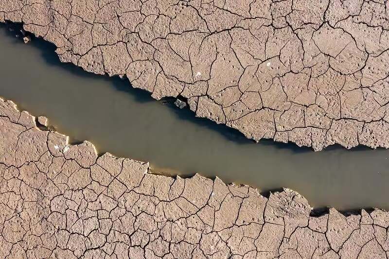
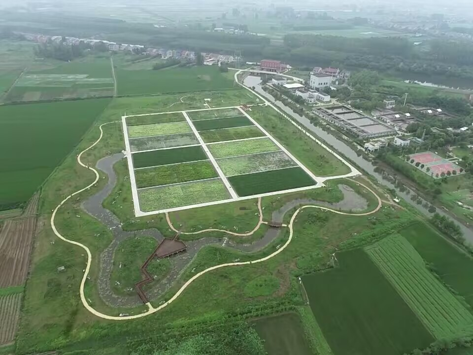

羽翼守望者


全球湿地面积自1900年以来已经减少了64%（Ramsar, 2018），主要原因为农业开垦、城市扩张和水污染。湿地的丧失直接威胁到全球约1/3依赖湿地生活的鸟类种群，包括鹤类、鹳类、鹭类和雁鸭类。
湿地恢复包括水文恢复（重建自然水文周期）、植被恢复（种植本土水生植物）和污染治理等措施。成功的案例包括中国的“长江湿地保护网络”和“沿海湿地修复工程”，已使部分地区的水鸟数量明显回升。

人工湿地（如水稻田、鱼塘）可成为水鸟的重要补充栖息地。研究表明，管理良好的稻田可为水鸟提供丰富的食物（螺类、昆虫）和栖息场所，尤其在迁徙季节。在长江中下游，数以万计的越冬白鹤、东方白鹳依赖圩区稻田觅食。
恢复湿地时，应注重“近自然”设计，包括浅滩、深水区、岛屿和植被带，创造多样化的微生境，满足不同水鸟的生态需求。